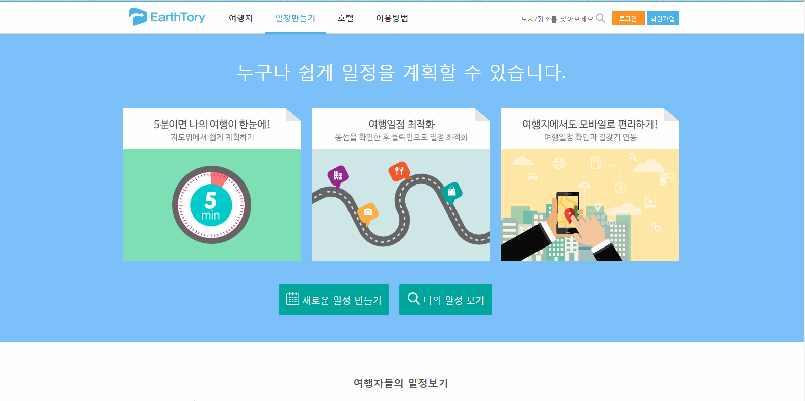

1. InterFace review for mobile and voice based intelligent assistants
Intelligent assistants로 Google Assistant를 사용해보았다. 평소에 이런 기능을 잘 사용하지 않기에 처음 사용해보았으나, 다른 사람들이 Siri나 Bixby를 사용하는 경우를 자주 보아서 질문에 따라 대략 어떤 반응을 보이는 지 종종 볼 수 있었다. 그래서 오늘 점심에 뭘 먹는 게 좋을까? 와 같은 질문을 했을 때 근처 맛집 정보와 연락처를 띄워줄 것이라고 기대했다. 하지만 이는 내가 뭘 먹을지 결정하는데 크게 도움이 되지 않는 정보이기에, 사람보다 내 질문에 대해 이해를 잘 못하거나 엉뚱한 대답을 띄워주거나 별로 도움이 안 되는 정보를 줄 것이라 생각했다. 하지만 실제로 질문을 해보니, 아래와 같은 뭐 억을 지 결정하는데 도움을 주는 어플리케이션을 띄워주었다.
Google Assistant에 점심에 무얼 먹을지 음성으로 물어봤을때의 답변이다또한 추가적으로 유튜브에 있는 어떠한 영상을 재생해달라 와 같은 명령을 해봤는데, 꽤 정확하게 인식하고 제대로 재생을 해주었다. 내가 예상했던 것보다 더 지능적이었고, 이는 이용하는데 꽤 유용할 것이라 생각하게 되었다. 특히 최근에 블루투스 이어폰을 많이 이용하고 있는 추세인데다가 네비게이션 기능이 기본적인 요즘, 이 AI는 보편적으로 사용되기에 충분하다고 생각한다. 그리고 UX에 관한 면은 검색을 통해 알아보았는데, 사용자가 자주 하는 요청이나 질문일수록 답변이나 처리 결과가 더욱 정확하고 정교해진다고 한다. 이로 인해, 구글 어시스턴트는 이용자에게 점점 맞춰지는 AI임을 알 수 있고, 보편적인 활용성 이외에도 개개인의 성향에도 맞춰지도록 발전해나갈 수 있다는 것을 알 수 있다. Bixby의 경우 호출하는 명령어도 바꿀 수 있어 남들과 다르게 정말 자신만의 Intelligent Assistant를 부를 수 있는 경우도 있으니, 이미 UX면에서도 충분히 활용 가능하고 영향을 줄 수 있다고 본다.
2. Comparative interface review for the travel planning web sites
expedia.co.kr(expedia.com), earthtory.com, hotels.com 이렇게 세 개의 여행 계획 웹사이트를 비교하고 분석해보았다. 먼저 세 웹사이트의 UI를 비교해보면, Expedia와 Hotels는 출발지와 도착지, 체크인, 체크아웃 혹은 여행을 출발하는 날과 돌아오는 날을 미리 기입하고 검색과 동시에 추천리스트들이 뜬다. 반면 Earthtory는 국가명이나 도시명을 먼저 기입한 후 나머지 필요한 정보를 기입한다. 그리고 모두 홈페이지에서 추천 여행지를 보여주는데 Earthtory는 독특하게 타인의 일정 자체를 함께 볼 수 있다.
앞이 Travel Blog, 뒤가 Earthtory의 일정물론 Expedia도 트래블 블로그를 통해 여행기 등을 볼 수 있지만, 일정 자체보다는 그저 흔히 블로그에서 볼 수 있는 글이나 마찬가지다. 이런 점을 보아 일정 자체를 계획하는 데 있어서는 Earthtory가 더 편리해보인다. 또한 Hotels는 숙박 시설 자체에만 맞춰져 있고 예약 가능하며, Expedia는 거기에 추가로 항공편까지 더해져 있어 Hotels에 비해 더 편리한 시스템을 갖춘 것 같다. 다만 부산을 검색했을 때 Hotels가 더 많은 시설이 나오는 것을 보아 국내여행과 같이 항공편이 필요 없는 경우엔 Hotels가 더 나은 결과를 보여주는 것 같다. 이 면에서 Earthtory는 시설 수도 적게 나오며, 다소 평점 시스템이 기준이 애매한 것 같아 아쉽다. 그리고 Earthtory는 한국어 지원을 하는데 한글로 검색이 안되는 이상한 문제점이 있어 이 부분도 아쉽다.
Expedia 숙박시설 검색 결과Expedia는 정렬 기준이 추천, 가격, 시내 중심에서의 거리, 평점, 베스트 특가 등등으로 나뉘어진다. 가격이나 평점 등의 정렬 기준은 DB내의 수치상으로만 정렬되어 리스트를 보여주는 형태의 알고리즘을 가지고 있는 것 같으며, 시내 중심에서의 거리는 Google Maps와 같은 지도 시스템을 이용하여 시내 중심과 거리 계산을 하여 정렬해서 보여주는 듯 하다. 베스트 특가의 경우에는 할인율이 높은 것부터 차례대로 보여주는 형태이다. 정렬 기준이 추천인 경우에는 조금 다른 방식의 알고리즘을 택한 것 같다. 평점과 별점, 가격, 할인율로 일정한 식을 가지고 계산하여 그 값에 따라 리스트를 보여주는 형태인 듯 하다.
Hotels 숙박시설 검색 결과Hotels는 확실히 숙박 시스템에 더 치중한 듯 호텔 등급에 따른 정렬, 지역의 랜드마크나 지하철역, 공항에서의 거리에 따른 정렬도 가능하다. 각 지역의 랜드마크나 지하철역, 근처 공항 등은 DB내에 저장해두고 보여주거나 Web Crawling을 통해 보여주는 것 같으며 이 또한 Google Maps와 같은 지도 시스템을 이용하여 거리 계산을 하여 정렬해서 보여주는 것 같다. 추천 시스템은 이용 후기로 인한 별점과 가격 할인율에 따라 일정한 계산을 통해 정렬해서 보여주는 듯 하다.
 Earthtory 숙박시설 검색 결과와 일정 계획 시스템Earthtory는 위 두 사이트에 비해 조금 단순한 시스템을 가지고 있어 보인다. 인기순, 가격순, 등급순, 거리순으로 정렬이 가능한데 인기순의 경우 평점과 이용후기수를 통해 정렬하는 것 같으며, 나머지는 그저 DB상의 수치만으로 정렬해서 보여주는 듯 하다. 이 웹 사이트의 독특한 점 중 하나인 인기 여행 일정 시스템의 경우 수많은 여행자들이 일정을 공유하여 그 중 최근에 조회수가 높고 평이 좋은 글들이 우선적으로 보이는 시스템을 가지고 있는 것 같다. 그리고 지도 위에서 동선을 확인하여 클릭만으로 일정을 최적화 하는 기능이나 일정을 저장해둔 뒤 일정 확인과 길찾기를 통한 시스템을 갖추고 있는데, 이는 위에서 얘기한 지도 시스템에 모바일 GPS 기능을 더해 좀 더 스마트하게 활용한 시스템으로 보인다.